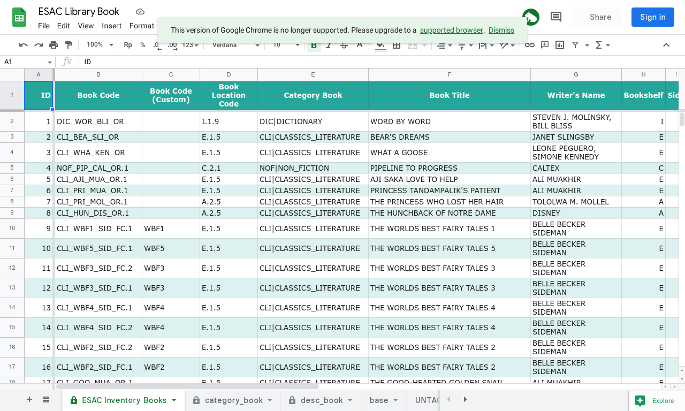
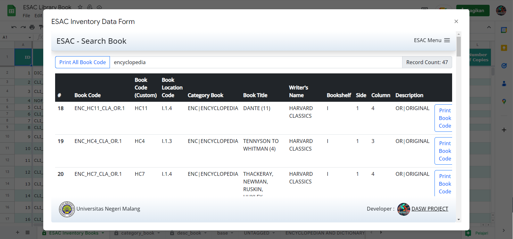
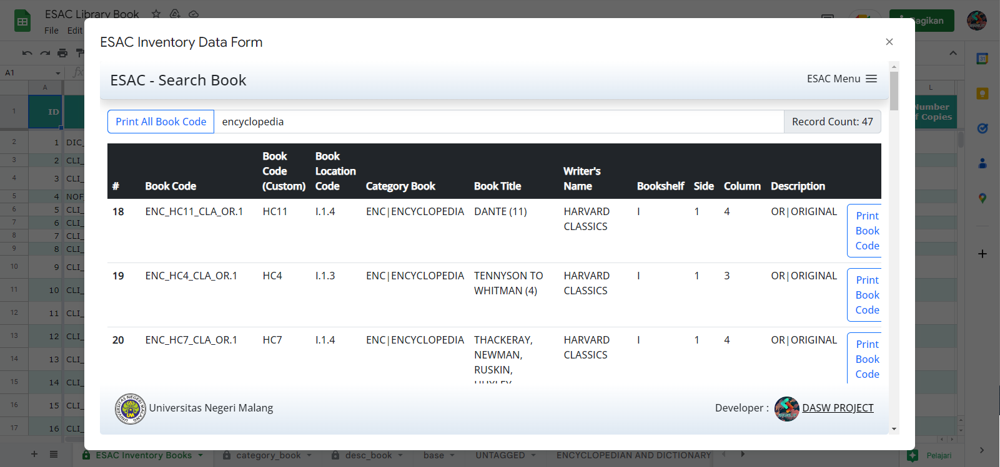
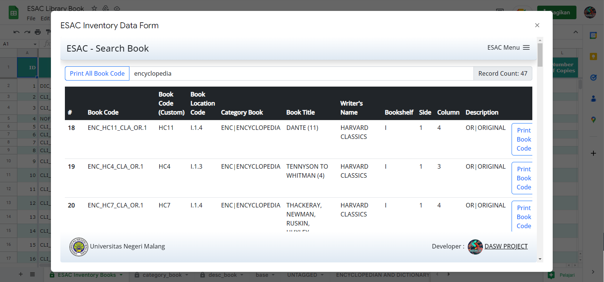

ESAC Inventory Book Apps
Microsoft Office Based AppsSpesifikasi
- Built-In with Google Spreadsheet
- Google Apps Script Integration (JavaScript)
- AtoGene (Auto Generate) feature
- Admin Menu CRUD (Book, Category)
- Collective Print for book code
- Track feature for the number of books & category
Tampilan Aplikasi
ESAC Inventory Book Apps

 


